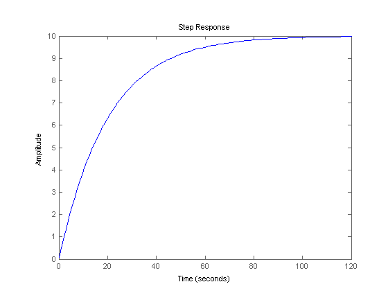
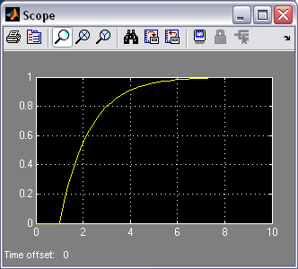

Cruise Control: Simulink Controller Design
Contents
In the Cruise Control: Simulink Modeling page we created a Simulink model of the cruise control system. You can recreate the model or download it here. In this section, we will show how to implement a feedback controller in Simulink to meet the performance specifications for the system.
Extracting a linear model into MATLAB
A linear model of the system (in state space or transfer function form) can be extracted from a Simulink model into MATLAB. This is done through the use of In1 and Out1 blocks and the MATLAB function linmod.
- Replace the Step Block and Scope Block with an In1 and an Out1 block, respectively (these blocks can be found in the Ports & Subsystems library). This defines the input and output of the system for the extraction process.

Save your file as "ccmodel.mdl" (select Save As from the File menu). MATLAB will extract the linear model from the saved model file, not from the open model window. At the MATLAB prompt, enter the following commands:
m = 1000;
b = 50;
u = 500;
[A,B,C,D] = linmod('ccmodel')
cruise_ss = ss(A,B,C,D);
A =
-0.0500
B =
1.0000e-03
C =
1
D =
0
To verify the model extraction, we will generate an open-loop step response of the extracted transfer function in MATLAB. We will multiply the numerator by 500 to simulate a step input of 500 N. Enter the following command in MATLAB.
step(u*cruise_ss)
Implementing PI control
In the Cruise Control: PID Control page a PI controller was designed with Kp = 800 and Ki = 40 to give the desired response. We will implement this in Simulink by first containing the open-loop system from earlier in this page in a Subsystem block.
- Create a new model window.
- Drag a Subsystem block from the Ports & Subsystems library into your new model window.

- Double-click on this block. You will see a blank window representing the contents of the subsystem (which is currently empty).
- Open your previously saved model of the cruise control system, ccmodel.mdl.
- Select Select All from the Edit menu (or Ctrl-A), and select Copy from the Edit menu (or Ctrl-C).
- Select the blank subsystem window from your new model and select Paste from the Edit menu (or Ctrl-V). You should see your original system in this new subsystem window. Close this window.
- You should now see input and output terminals on the Subsystem block. Name this block "plant model".

Now, we will build a PI controller around the plant model. First, we will feed back the plant output.
- Draw a line extending from the plant output.
- Insert a Sum block and assign "+-" to it's inputs.
- Tap a line of the output line and draw it to the negative input of the Sum block.

The output of the Sum block will provide the error signal. From this, we will generate proportional and integral components.
- Insert an Integrator block after the Sum block and connect them with a line.
- Insert and connect a Gain block after the Integrator block to provide the integral gain.
- Label this Integrator "Ki" and assign it a value of "Ki".
- Insert a new Gain block and connect it with a line tapped off the output of the Sum block.
- Label this gain "Kp" and assign it a value of "Kp".

Now we will add the proportional and integral components and apply the sum to the plant.
- Insert a Sum block between the Ki block and the plant model and connect the outputs of the two Gain blocks to the Sum block inputs.
- Connect the Sum block output to the input of the plant block.

Finally, we will apply a step input and view the output with a Scope block.
- Attach a Step block to the free input of the feedback Sum block.
- Attach a Scope block to the plant output.
- Double-click the Step block and set the Step Time to "0" and the Final Value to "u". This allows the input magnitude to be changed outside of Simulink.

You can download our version of the closed-loop system model here.
In this example, we constructed a PI controller from fundamental blocks. As an alternative, we could have used a Transfer Function block (from the Continuous library) to implement this in one step, as shown below.

You can download this model here.
Closed-loop response
To simulate this system, first, an appropriate simulation time must be set. Select Parameters from the Simulation menu and enter "10" in the Stop Time field. The design requirements included a rise time of less than 5 sec, so we simulate for 10 seconds to view the output. The physical parameters must now be set. Run the following commands at the MATLAB prompt:
m = 1000; b = 50; u = 10; Kp = 800; Ki = 40;
Run the simulation (hit Ctrl-T or select Start from the Simulation menu). When the simulation is finished, double-click on the scope and hit its autoscale button. You should see the following output.
